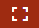
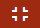
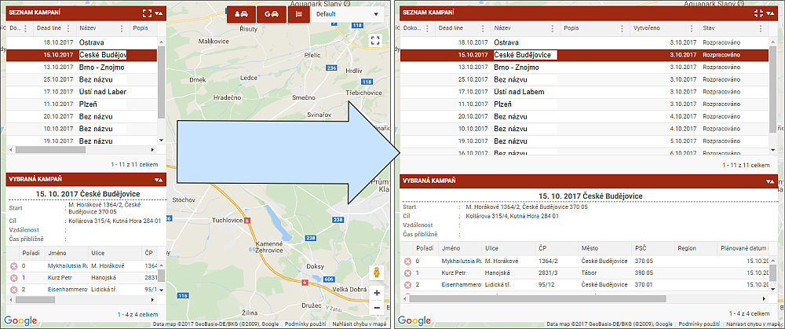

Maximalizace kampaně
Ikonka v záhlaví seznamu umožňuje roztažení obou seznamů na maximální šířku v okně mapy. Ikonka maximalizuje obě okna, tedy Seznam kampaní i Vybraná kampaň.
 Maximalizace oken  Minimalizace oken
